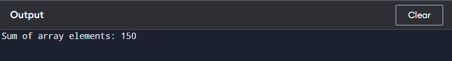

A function is a block of code that performs a specific task. It is a reusable piece of code that can be called multiple times throughout a program.
The basic syntax of a function in C is as follows:
return_type function_name(parameters) {
// function body
}
Functions in C can be categorized into two types:
printf().
int getNumber() {
return 5;
}
int add(int a, int b) {
return a + b;
}
void displayMessage() {
printf("Hello, World!");
}
void printSum(int a, int b) {
printf("Sum: %d", a + b);
}
Automatic variables are created when a function is called and destroyed when it exits. They have local scope.
External variables are defined outside any function and can be accessed from any function within the same file or other files.
Register variables are stored in CPU registers for faster access. They have local scope and are declared with the register keyword.
Static variables maintain their value between function calls and have local scope. They are declared with the static keyword.
A recursive function is a function that calls itself to solve a problem. A recursive function in C is a function that calls itself during its execution. This technique is used to solve problems by breaking them down into smaller, similar subproblems.
return_type function_name(parameters) {
if (base_condition) {
return some_value;
} else {
return function_name(modified_parameters);
}
}
#include// Recursive function to compute factorial unsigned long factorial(unsigned int n) { // Base case: when n is 0 or 1, return 1 if (n == 0 || n == 1) return 1; // Recursive case: n * factorial(n - 1) return n * factorial(n - 1); } int main() { unsigned int num = 5; printf("Factorial of %u is %lu\n", num, factorial(num)); return 0; }
Arrays can be passed to functions to manipulate the data. Here’s an example:
#include// Function that receives an array and its size, then returns the sum int sumArray(int arr[], int n) { int sum = 0; for (int i = 0; i < n; i++) { sum += arr[i]; } return sum; } int main() { int numbers[] = {10, 20, 30, 40, 50}; int size = sizeof(numbers) / sizeof(numbers[0]); // Pass the array and its length to the function int total = sumArray(numbers, size); printf("Sum of array elements: %d\n", total); return 0; }